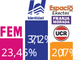
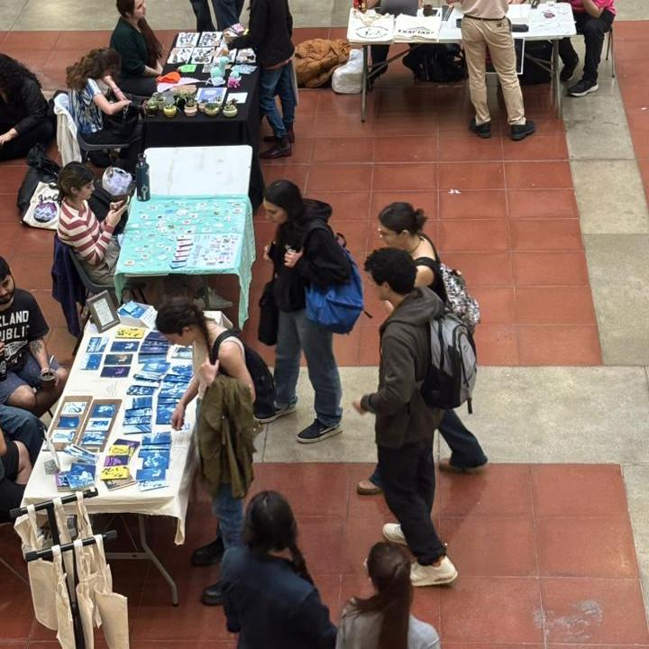
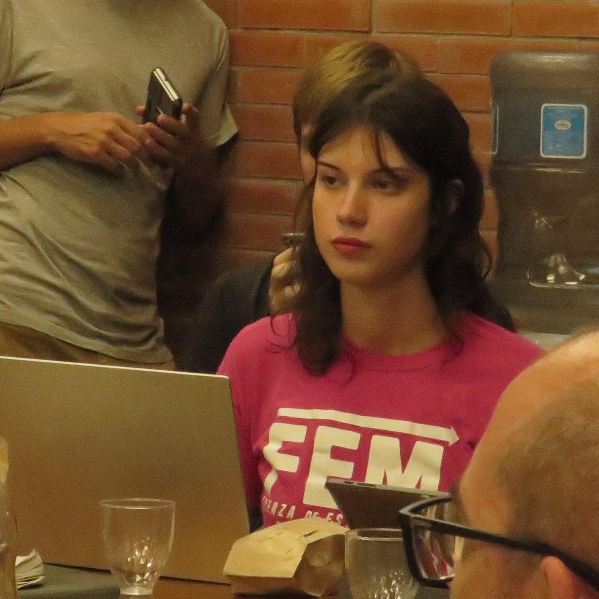
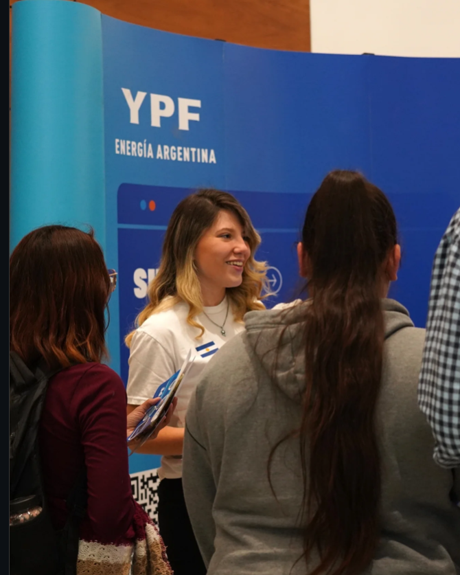
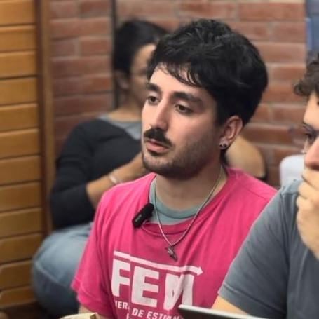
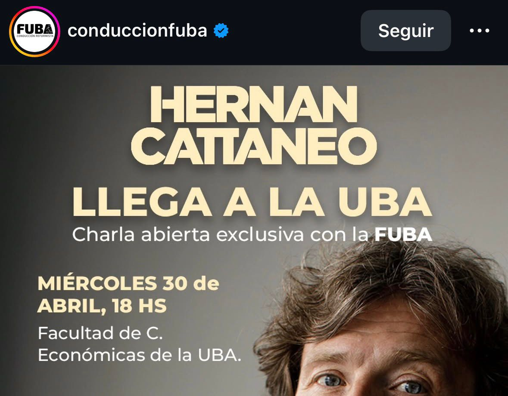
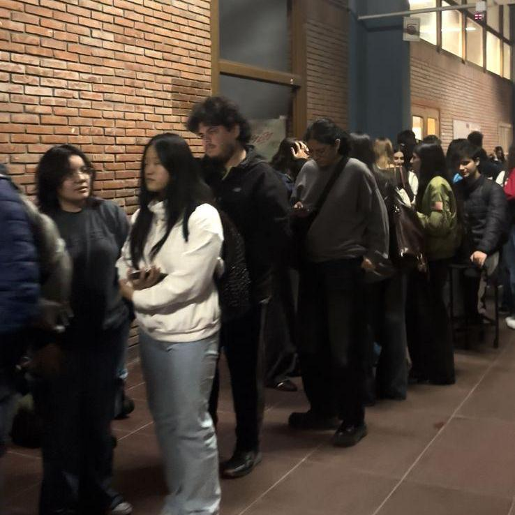
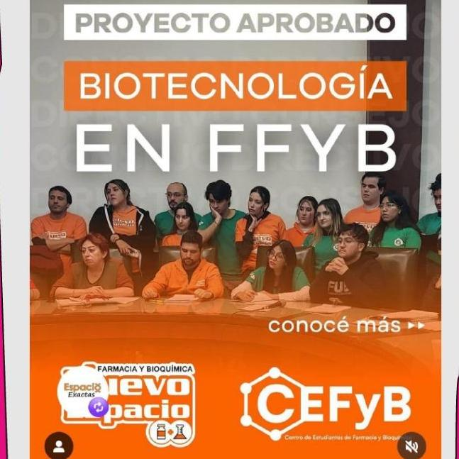

Porque el FEM?
¿Que se vota en Exactas?
Del 20 al 24 de abril los estudiantes elegimos entre quienes trabajan para sostener la cursada y quienes la hacen imposible.
Consejo Directivo:
Es donde se toman las decisiones que afectan nuestra cursada (becas horarios, programas, herramientas para los estudiantes, etc). Por eso hay que seguir llevando la voz de los estudiantes que trabajan para defender lacursada.
¿Cómo salió la última elección?

Actualmente
Identidad tiene 3 consejeros y el FEM 1.
¡La voz de los estudiantes que trabajan tiene que seguir estando!
Centro de Estudiantes:
Para el FEM, el CECEN tiene que ser el espacio que tenemos para defendernos y construir comunidad. Es el primer lugar al que vas cuando tenés un problema con una materia cuando necesitás una herramienta para estudiar. ¡La voz de los estudiantes que trabajan tiene que seguir estando!
Los 5 logros para el estudiante que trabaja
Cada vez somos mas los estudiantes que trabajamos (en relación de dependencia, freelance, emprendimiento y/o con tareas de cuidado) Desde el FEM conocemos lo que cuesta sostener la cursada, por eso logramos diferentes políticas para que puedas permanecer y terminar la carrera
-

Feria de Emprendedores en Movimiento
Mas de 50 emprendedores tienen un lugar gratuito y seguro para feriar.
-

Mejoramos el sistema de Pasantias
Eliminamos las trabas burocráticas y logramos que la facultad realice un seguimiento de la evolución del trabajo y tu cursada.
-

Logramos mayor conexion con empresas e instituciones
Realizamos la Feria de trabajo “+Talento”, donde empresas e instituciones se acercaron a mostrar salidas laborales .
-

Ampliacion y mejora de Becas
Logramos que las Becas Exactas lleguen a los estudiantes del CBC.
-
¡NUEVO LOGRO! Espacio de CO-Work:
Después de meses de trabajo y charlas, logramos el primer Espacio de Coworking en el Pabellón 2.
QUE VOZ QUERES?
LA VOZ DE LOS ESTUDIANTES QUE TRABAJAN
-
Conseguimos un sistema de pasantías laborales pagas para que la cursada sea compatible con un trabajo en nuestro área de estudio
-
Conseguimos que las Becas Exactas lleguen a CBC para que ningun estudiante se quede sin cursar
-
Creamos la Feria de Emprendedores en Movimiento con mas de 50 emprendedores que ahora pueden trabajar donde estudian
-
Conquistamos lostutores para los ingresantes, para acompañar desde el 1er día
-
Nuevo espacio de cowork, para poder trabajar cómodamente despues de clase
LA VOZ DE LOS CURROS
-

Alquilan Ciudad Universitaria para hacer negocios y nos cancelan las clases
-
Arreglan con el gobierno nacionalpdejando a nuestros docentes sin sueldos, por ende son responsables del paro.
-

Son quienes manejan el CBC y jamas hicieron nada con las filas gigantes para cambiarte de turno
-

Intentaron llevarse biotecnologia de exactas por sus arreglos con otras facultades
-
Destruyen nuestar reserva con recitales y eventos privados mientras se llenan los bolsillos

+30 proyectos presentados - 100% aprobacion
-
Programa de Pasantias Laborales
APROBADO
-
Tutores para Ingresantes
APROBADO
-
Nuevo espacio de CoWork
APROBADO
-
Becas exactas para el CBC
APROBADO
-
Carrera de Biotecnología en Exactas
APROBADO
-
Equipo de Promotores Ambientales
APROBADO
-
Boleto educativo para CABA>
APROBADO
-
Renovacion del Plan de Carrera de Física
APROBADO
-
Programa "+Tesis" para tesis de laboratorio
APROBADO
-
extension de plazos de finales
APROBADO
-
Nos opusimos al recorte de fechas de final
❗❗
Nuestros proximos lanzamientos:
- Mas oferta hoaria en turno noche
- Comedor turno noche para todos
- Cupo laboral en el comedor
- Boleto Educativo para PBA
- Mejora integral de los espacios de estudio y descanso
- Prioridad de becas para estudiantes en el 0
El CECEN que necesitamos
Hace 7 años que identidad tiene la presidencia del centro de estudiantes. desde el FEM , reconocemos puntos fuertes pero tambien problemas.
Lo Bueno
Creemos que en estos años lograron tener un buen manejo de locales con precios y horarios acceisbles. En un contexto de crisis económica esto ayuda al estudiante.
Lo que falta
Sin embargo creemos que hay cosas por mejorar. Vemos un centro cada vez menos participativo para con quien piensa diferente con una notable falta de espacios de comunidad y encuentro.
¿Que hacemos desde el FEM?
Desde el
El enemigo real
La principal amenaza a los estudiantes es al falta de presupuesto para las universidades, que los ocente scobres dos pesos y los evento smasivos en ciudad que afectan nuestra reserva y nos dejan sin clases. con identidad nos encontramos del mismo lado en estos porblemas. Ante agrupaciones como Espacio Exactas- Franja Morada que nos hacen perder el cuatrimestre, la prioridad somos los estudiantes que queremos estudiar. exactas esta por encima de nuestras diferencias
Constryamos el CECEN que necesitamos. Mas unidad, mas comunidas, mas voces apra defender exactas